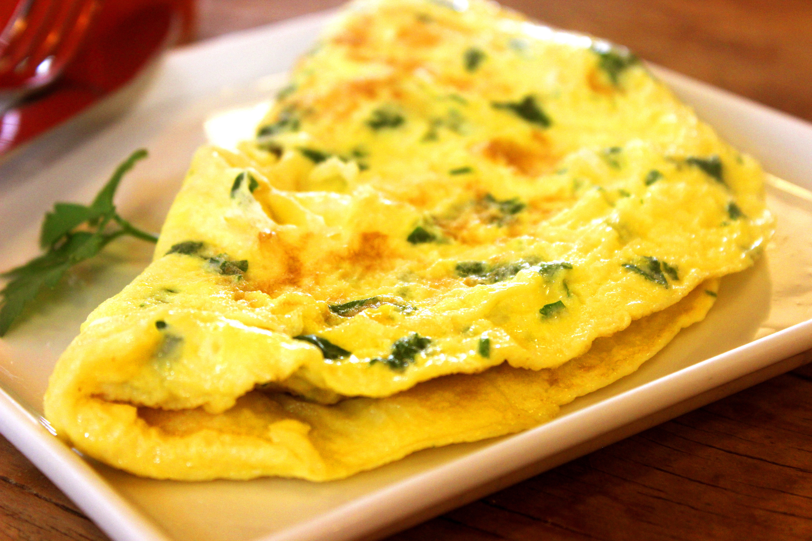

Omelette
|  |
Ingredients
3 Eggs
Salt and Pepper
Butter
Grated Cheese (optional)
Mixed Herbs (optional)
Method
- Mix the eggs in any sort of bowl or jug you like (a pint glass works well) with salt, pepper and herbs desired.
- Heat the butter (or oil) in a reasonably large frying pan.
- Pour in the egg mixture slowly and swirl the pan a little to even it out.
- After 30 seconds or so the top should firm up, at this point add grated cheese if you like
- Continue cooking a little until the cheese begins to melt, then fold the omelettle in half with a bendy spatula.
- If it's nice and cooked on the bottom already then serve, otherwise, continue cooking on each side a little more!
Sometimes I make an omelette with loads of onions, chopped sausages and vegetables in. If you do this then you probably won't be able to fold it so instead, pop the pan under a grill to finish the top off after it's cooked underneath!